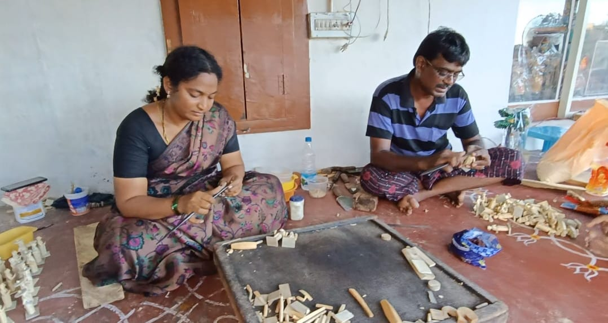
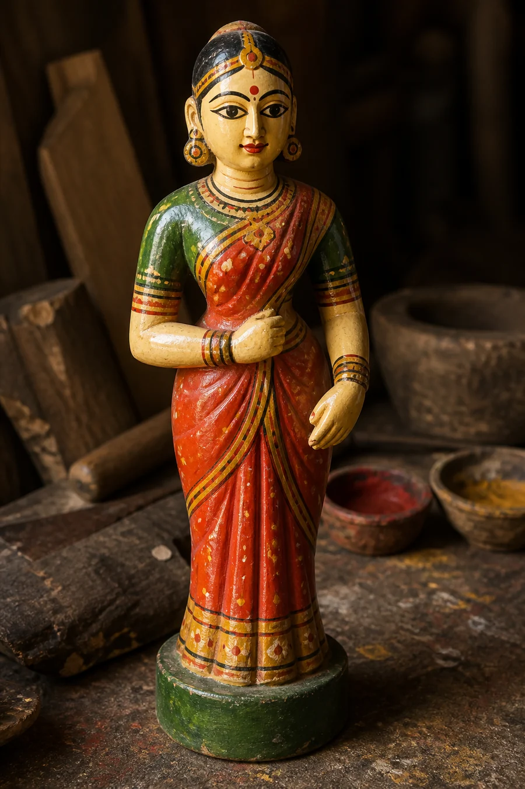
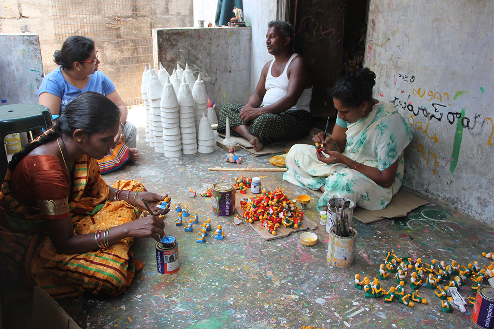

Wood
Light, workable wood is used to shape the basic form.
Wood, character and memory shaped by hand in Kondapalli.
Kondapalli Bommallu come from Kondapalli in NTR district, close to Vijayawada. District sources describe the tradition as centuries old and rooted in the Aryakshatriya artisan community.
Its figures carry rural life, animals, mythology and festival memory in a form that has become strongly associated with Andhra.

Official district process accounts describe a sequence of carving, surface preparation and vivid painted colour. The hand remains visible at every stage.
Light, workable wood is used to shape the basic form.
The object is shaped and detailed by hand using carving tools.
District accounts describe surface preparation using sawdust and tamarind-seed paste.
The prepared figure is finished in vivid painted colour.
The object becomes a figure carrying cultural or everyday meaning.


These objects have never represented only play. They also preserve characters, occupations, stories and scenes from cultural life.
Scenes of work, movement and everyday activity.
Recognisable figures that preserve local character.
Stories and figures drawn from religious and cultural memory.
Bommala Koluvu traditions arrange figures into ceremonial displays.
Small figures can carry stories larger than the object itself.
The craft has become a distinctive expression of place.
The word “toy” is useful, but it may not describe every future context for the craft. A handmade cultural figure can also be understood as a miniature, collectible, display object, museum-store object or cultural gift.

Kondapalli remains a living craft ecosystem rather than only a historical tradition. Government district material continues to recognise Kondapalli Bommallu and its craft cluster.
QVibe’s next task is not to assume what artisans need.
It is to understand the people making the craft today, what already works, what does not, how objects currently reach buyers and what the makers themselves want for the future.